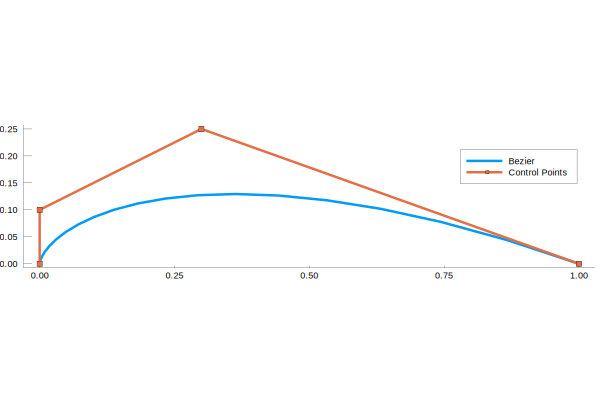
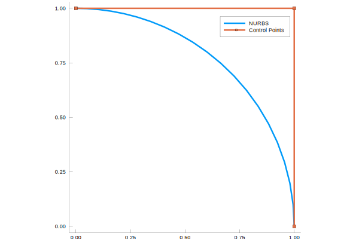
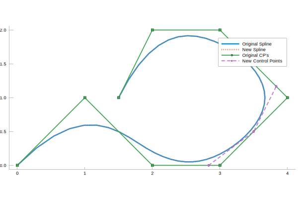
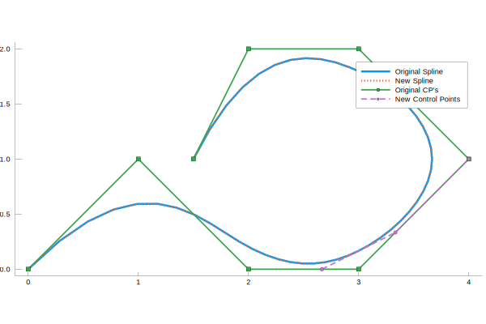
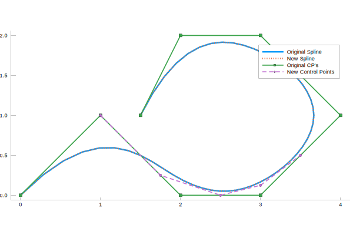
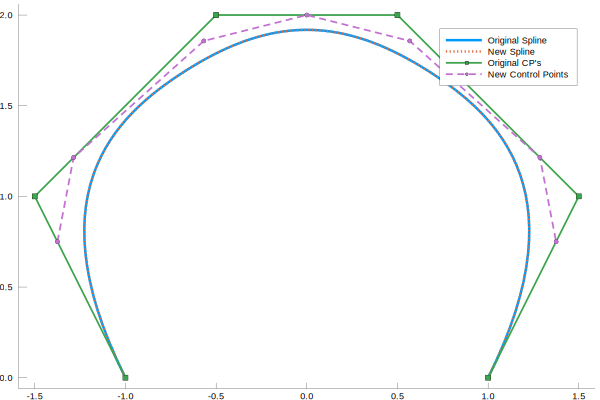
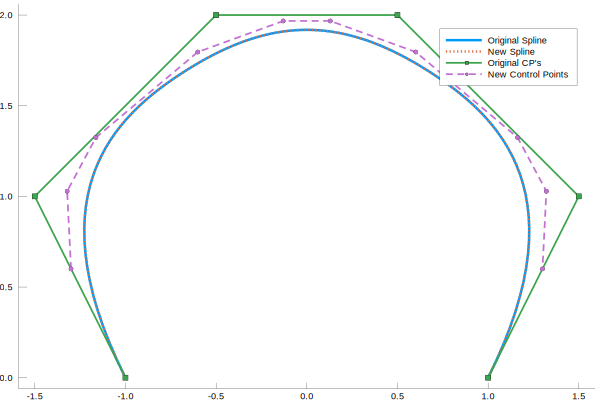

Functions
Bezier Functions
Splines.binomialcoeff — Function.binomialcoeff(n, i)Calculate the Binomial Coefficient defined as:
let n = 6 and i = 2. We calculate n choose i (which in this case is 15) by calling the binomialcoeff function:
Example
n = 6
i = 2
nchoosei = Splines.binomialcoeff(n, i)15.0Splines.bernsteincoeff — Function.bernsteincoeff(u, n, i)Calculate Bernstein Coefficient (Bezier Basis Function) defined as:
at parametric point, $u$, where $0\leq u\leq1$. $u$ may either be a single value or an array.
(see NURBS, eqn 1.8)
Examples
example 1: single u value
u = 0.5
n = 6
i = 2
b = Splines.bernsteincoeff(u, n, i)0.234375example 2: u as an array
u = [0.0, 0.1, 0.2, 0.3, 0.4, 0.5, 0.6, 0.7, 0.8, 0.9, 1.0]
n = 6
i = 2
b = Splines.bernsteincoeff(u, n, i)11-element Array{Float64,1}:
0.0
0.09841500000000002
0.2457600000000001
0.3241349999999999
0.31104000000000004
0.234375
0.13824
0.059535000000000025
0.015359999999999988
0.0012149999999999989
0.0Splines.simple_bezier1D — Function.simple_bezier1D(P, u)Calculate a point along a Bezier curve at the parametric point, $u$, based on the control points $\mathbf{P}$ where the Bezier curve, $\mathbf{C}(u)$ is defined as:
where $B$ is the basis (Bernstein Coefficient) at parametric point, $u$, as calculated frombernsteincoeff, and n is the number of control points in vector $\mathbf{P}$. Again, $u$ may either be a single value or an array.
(see NURBS eqn 1.7)
Example
P = [0.0 0.0; 0.0 0.1; 0.3 0.25; 1.0 0.0] #control point definition
u = collect(0:0.05:1.0) #parametric points
bezierCurve = Splines.simple_bezier1D(P, u)21×2 Array{Float64,2}:
0.0 0.0
0.00014875 0.0014725
0.00118 0.00576
0.00394875 0.0126225
0.00928 0.02176
0.0179687 0.0328125
0.03078 0.04536
0.0484487 0.0589225
0.07168 0.07296
0.101149 0.0868725
⋮
0.23328 0.12096
0.293849 0.127172
0.36358 0.12936
0.442969 0.126562
0.53248 0.11776
0.632549 0.101873
0.74358 0.07776
0.865949 0.0442225
1.0 0.0
B-Spline Functions
Splines.getspanindex — Method.getspanindex(n, p, u, U)Complete binary search to find span index of vector, U, in which knot, u, lies. (NURBS A2.1)
Example
U = [0,0,0,1,2,3,4,4,5,5,5]
p = 2
n = length(U)-p-1
u = 5/2
Splines.getspanindex(n,p,u,U)4u = 5
Splines.getspanindex(n,p,u,U)8u = 0
Splines.getspanindex(n,p,u,U)2Splines.basisfunctions — Method.basisFunctions(i, u, p, U)Calculate the non-vanishing basis functions of the B-Spline of order p, defined by knots U at knot u.
The formula for the basis functions is:
Note that the algorithm used in basisFunctions removes redunant calculation and potential division by zero (see NURBS, eqn 2.5 and A2.2).
Example
U = [0,0,0,1,2,3,4,4,5,5,5]
u = 5/2
p = 2
i = 5
bases = Splines.basisfunctions(i,u,p,U)3-element Array{Float64,1}:
0.125
0.75
0.125Splines.basisfunctionsderivatives — Method.basisfunctionsderivatives(i, u, p, n, U)Calculate the non-vanishing basis functions and derivatives of the B-Spline of order p, defined by knots U at parametric location u.
The basis function derivative is given by
(see NURBS, eqn 2.7 and A2.3)
Inputs:
- i : knot span containing u
- u : parametric point of interest
- p : the curve order
- n : the max derivative order (n ≦ p)
- U : the knot vector
Example
U = [0,0,0,1,2,3,4,4,5,5,5]
u = 5/2
p = 2
i = 5
n = p
derivatives = Splines.basisfunctionsderivatives(i,u,p,n,U)3×3 Array{Float64,2}:
0.125 0.75 0.125
-0.5 0.0 0.5
1.0 -2.0 1.0Splines.curvederivatives1 — Method.curvederivatives1(n, p, U, P, u, d)Compute a curve point and its derivatives up do the dth derivative at parametric point u. (NURBS, A3.2)
Inputs
- n : the number of control points is n+1
- p : the degree of the curve
- U : the knot vector
- P : the control points
- u : the parametric point of interest
- d : derivative order (0 ≤ k ≦ d)
Example
U = [0,0,0,1,2,3,4,4,5,5,5]
u = 5/2
p = 2
n = length(U)-p-1
P = [0 0; 1/2 1/2; 1 0; 3/2 1/2; 2 0; 5/2 1/2; 3 0]
d = 1
curveDerivatives = Splines.curvederivatives1(n, p, U, P, u, d)2×2 Array{Float64,2}:
1.5 0.375
0.5 0.0Splines.curvederivativecontrolpoints — Method.curvederivativecontrolpoints(n, p, U, P, d, r1, r2)Compute control points of curve derivatives:
with
(see NURBS, eqn 3.8 and A3.3)
Inputs
- n : the number of control points is n+1
- p : the degree of the curve
- U : the knot vector
- P : the control points
- u : the parametric point of interest
- d : derivative order (0 ≤ k ≦ d)
- r1 : first control point index
- r2 : last control point index
Example
U = [0,0,0,0,2/5,3/5,3/5,1,1,1,1]
u = 1/2
i = 4
d = 1
p = 3
P = [0 0; 1/2 1/2; 1 0; 3/2 1/2; 2 0; 5/2 1/2; 3 0]
n = length(P[:,1])-1
r1 = 0
r2 = n
cprime = Splines.curvederivativecontrolpoints(n, p, U, P, d, r1, r2)2×2×7 Array{Float64,3}:
[:, :, 1] =
0.0 0.0
3.75 3.75
[:, :, 2] =
0.5 0.5
2.5 -2.5
[:, :, 3] =
1.0 0.0
2.5 2.5
[:, :, 4] =
1.5 0.5
2.5 -2.5
[:, :, 5] =
2.0 0.0
3.75 3.75
[:, :, 6] =
2.5 0.5
3.75 -3.75
[:, :, 7] =
3.0 0.0
0.0 0.0NURBS Functions
Splines.nurbsbasis — Function.nurbsbasis(i,p,u,U,w)Get rational basis functions and derivatives. see eqn 4.2
where $N_{i,p}(u )$ are B-Spline Basis Functions and $w_i$ are weights associated with the NURBS control points.
Inputs:
- u : parametric point of interest
- p : the curve order
- n : the max derivative order (n ≦ p)
- U : the knot vector
- weights : control point weights
Example
U = [0,0,0,1,2,3,4,4,5,5,5] #knot vector
w = [1,1,1,1,1,1,1] #control point weights
u = 5/2 #parametric point of interest
p = 2 #curve degree
n = 1 #number of derivatives
R, dR = Splines.nurbsbasis(u,p,n,U,w) #rational bases and first derivatives([0.125, 0.75, 0.125], [-0.5, 0.0, 0.5])Splines.curvepoint — Function.curvepoint(n, p, U, Pw, u)Compute point on rational B-Spline curve defined as:
where $\mathbf{P}_i^w$ are the set of weighted control points and weights such that $\mathbf{P}_i^w = (w_ix_i, w_iy_i, w_iz_i, w_i)$.
(see NURBS, eqn 4.5 and A4.1)
Inputs:
- n : the number of control points minus 1 (the index of the last control point)
- p : the curve order
- U : the knot vector
- Pw : the set of weighted control points and weights
- u : the parametric point of interest
TODO: if u value outside of U vector range is given, function hangs, but doesn't throw error. Need to add a check/error.
Examples
example 1: single point
U = [0, 0, 0, 1, 1, 1] #knot vector
u = 0 #parametric point of interest
p = 2 #curve order
P = [1 0; 1 1; 0 1] #unweighted points
w = [1 1 2] #weights
Pw = [1 0 1; 1 1 1; 0 2 2] #weighted points
n = length(P[:, 1])-1
Cw = Splines.curvepoint(n, p, U, Pw, u)3-element Array{Float64,1}:
1.0
0.0
1.0example 2: array of points
U = [0, 0, 0, 1, 1, 1] #knot vector
u = collect(0:0.05:1.0) #parametric points
p = 2 #curve order
P = [1 0; 1 1; 0 1] #unweighted points
w = [1 1 2] #weights
Pw = [1 0 1; 1 1 1; 0 2 2] #weighted points
n = length(P[:, 1])-1
Cw = zeros(length(u), length(Pw[1, :]))
for i = 1:length(u)
Cw[i, :] = Splines.curvepoint(n, p, U, Pw, u[i])
end
Splines.rationalcurvederivatives — Function.rationalcurvederivatives(Aders, wders, d)Compute the point $\mathbf{C}(u)$ and the derivatives $\mathbf{C}^{(k)}(u)$ for $1 \leq k \leq d$ where:
where $\mathbf{A}^{(k)}(u)$ and $w^{(i)}(u)$ are precomputed using preweighted control points for some parametric point, $0 \leq u \leq 1$, from curvederivatives1 and are inputs Aders and wders, respectively.
(see NURBS eqn 4.8 and A4.2)
Example
U = [0, 0, 0, 1, 1, 1] #knot vector
u = 0 #parametric point of interest
p = 2 #curve order
P = [1 0; 1 1; 0 1] #unweighted points
w = [1 1 2] #weights
Pw = [1 0 1; 1 1 1; 0 2 2] #weighted points
n = length(P[:, 1])-1
d = 2 #max derivative level (2nd derivative)
#Calculate Cw(u) derivatives
ders = Splines.curvederivatives1(n, p, U, Pw, u, d)
#Separate derivatives
Aders = ders[:, 1:end-1]
wders = ders[:, end]
#Calculate NURBS derivatives
CK = Splines.rationalcurvederivatives(Aders, wders, d)3×2 Array{Float64,2}:
1.0 0.0
0.0 2.0
-4.0 0.0Splines.curveknotinsertion — Function.curveknotinsertion(np, p, UP, Pw, u, k, s, r)Compute a new curve from knot insertion. Using the formula:
where
(see NURBS eqn 5.15 and A5.1)
Inputs:
- np : the number of control points minus 1 (the index of the last control point) before insertion
- p : the curve order
- UP : the knot vector before insertion
- Pw : the set of weighted control points and weights before insertion
- u : the parametric point of interest
- k : the span index at which the knot is to be inserted.
- s : numer of instances of the new knot alrady present in the knot vector, UP
- r : number of times the new knot is inserted (it is assumed that $r+s \leq p$ )
Outputs:
- nq : the number of control points minus 1 (the index of the last control point) after insertion
- UQ : the knot vector after insertion
- Qw : the set of weighted control points and weights after insertion
Examples
example 1: Unique Knot Insertion
UP = [0, 0, 0, 0, 1, 2, 3, 4, 5, 5, 5, 5]
u = 5/2
p = 3
P = [0 0; 1 1; 2 0; 3 0; 4 1; 3 2; 2 2; 1.5 1]
w = [1 1 1 1 1 1 1 1]
Pw = [0 0 1; 1 1 1; 2 0 1; 3 0 1; 4 1 1; 3 2 1; 2 2 1; 1.5 1 1]
np = length(P[:, 1])-1
k = 5
s = 0
r = 1
nq, UQ, Qw = Splines.curveknotinsertion(np, p, UP, Pw, u, k, s, r)(8, [0.0, 0.0, 0.0, 0.0, 1.0, 2.0, 2.5, 3.0, 4.0, 5.0, 5.0, 5.0, 5.0], [0.0 0.0 1.0; 1.0 1.0 1.0; … ; 2.0 2.0 1.0; 1.5 1.0 1.0])
example 2: Repeated Knot Insertion
UP = [0, 0, 0, 0, 1, 2, 3, 4, 5, 5, 5, 5]
u = 2
p = 3
P = [0 0; 1 1; 2 0; 3 0; 4 1; 3 2; 2 2; 1.5 1]
w = [1 1 1 1 1 1 1 1]
Pw = [0 0 1; 1 1 1; 2 0 1; 3 0 1; 4 1 1; 3 2 1; 2 2 1; 1.5 1 1]
np = length(P[:, 1])-1
k = 5
s = 1
r = 1
nq, UQ, Qw = Splines.curveknotinsertion(np, p, UP, Pw, u, k, s, r)(8, [0.0, 0.0, 0.0, 0.0, 1.0, 2.0, 2.0, 3.0, 4.0, 5.0, 5.0, 5.0, 5.0], [0.0 0.0 1.0; 1.0 1.0 1.0; … ; 2.0 2.0 1.0; 1.5 1.0 1.0])
Splines.refineknotvectorcurve — Function.refineknotvectorcurve(n, p, U, Pw, X, r)Refine curve knot vector using NURBS A5.4.
This algorithm is simply a knot insertion algorithm that allows for multiple knots to be added simulataneously, i.e., a knot refinement procedure.
Inputs:
- n : the number of control points minus 1 (the index of the last control point) before insertion
- p : the curve order
- U : the knot vector before insertion
- Pw : the set of weighted control points and weights before insertion
- X : elements, in ascending order, to be inserted into U (elements should be repeated according to their multiplicities, e.g., if x and y have multiplicites 2 and 3, X = [x,x,y,y,y])
- r : length of X vector
Outputs:
- Ubar : the knot vector after insertion
- Qw : the set of weighted control points and weights after insertion
Example
U = [0, 0, 0, 0, 1, 2, 3, 4, 5, 5, 5, 5] #original knot vector
X = [1.5, 2.5] #knots to be added (ascending order)
p = 3 #curve order
Pw = [0 0 1; 1 1 1; 2 0 1; 3 0 1; 4 1 1; 3 2 1; 2 2 1; 1 1 1] #weighted control points
n = length(P[:,1])-1 #largest zero-based index in control point vector
r = length(X)-1 #largest zero-based index in X (vector of knots to be added)
Ubar, Qw = Splines.refineknotvectorcurve(n, p, U, Pw, X, r)([0.0, 0.0, 0.0, 0.0, 1.0, 1.5, 2.0, 2.5, 3.0, 4.0, 5.0, 5.0, 5.0, 5.0], [0.0 0.0 1.0; 1.0 1.0 1.0; … ; 2.0 2.0 1.0; 1.0 1.0 1.0])
Splines.degreeelevatecurve — Function.degreeelevatecurve(n,p,U,Pw,t)Raise degree of spline from p to p $+t$, $t \geq 1$ by computing the new control point vector and knot vector.
Knots are inserted to divide the spline into equivalent Bezier Curves. These curves are then degree elevated using the following equation.
where $\mathbf{P}^t_i$ are the degree elevated control points after $t$ -degree elevations
Finally, the excess knots are removed and the degree elevated spline is returned.
(see NURBS eqn 5.36, A5.9)
Inputs:
- n : the number of control points minus 1 (the index of the last control point) before degree elevation
- p : the curve order
- U : the knot vector before degree elevation
- Pw : the set of weighted control points and weights before degree elevation
- t : the number of degrees to elevate, i.e. the new curve degree is p+t
Outputs:
- nh : the number of control points minus 1 (the index of the last control point) after degree elevation
- Uh : the knot vector after degree elevation
- Qw : the set of weighted control points and weights after degree elevation
Examples
example 1: Single Degree Elevation
U = [0,0,0,0,3/10,7/10,1,1,1,1]
p = 3
P = [-1 0; -1.5 1; -0.5 2; 0.5 2; 1.5 1; 1 0]
w = [1 1 1 1 1 1]
Pw = [-1 0 1; -1.5 1 1; -0.5 2 1; 0.5 2 1; 1.5 1 1; 1 0 1]
n = length(P[:,1])-1
t = 1
nh, Uh, Qw = Splines.degreeelevatecurve(n,p,U,Pw,t)(8, [0.0, 0.0, 0.0, 0.0, 0.0, 0.3, 0.3, 0.7, 0.7, 1.0, 1.0, 1.0, 1.0, 1.0], [-1.0 0.0 1.0; -1.375 0.75 1.0; … ; 1.375 0.75 1.0; 1.0 0.0 1.0])
example 2: 2 Degree Elevation
U = [0,0,0,0,3/10,7/10,1,1,1,1]
p = 3
P = [-1 0; -1.5 1; -0.5 2; 0.5 2; 1.5 1; 1 0]
w = [1 1 1 1 1 1]
Pw = [-1 0 1; -1.5 1 1; -0.5 2 1; 0.5 2 1; 1.5 1 1; 1 0 1]
n = length(P[:,1])-1
t = 2
nh, Uh, Qw = Splines.degreeelevatecurve(n,p,U,Pw,t)(11, [0.0, 0.0, 0.0, 0.0, 0.0, 0.0, 0.3, 0.3, 0.3, 0.7, 0.7, 0.7, 1.0, 1.0, 1.0, 1.0, 1.0, 1.0], [-1.0 0.0 1.0; -1.3 0.6 1.0; … ; 1.3 0.6 1.0; 1.0 0.0 1.0])